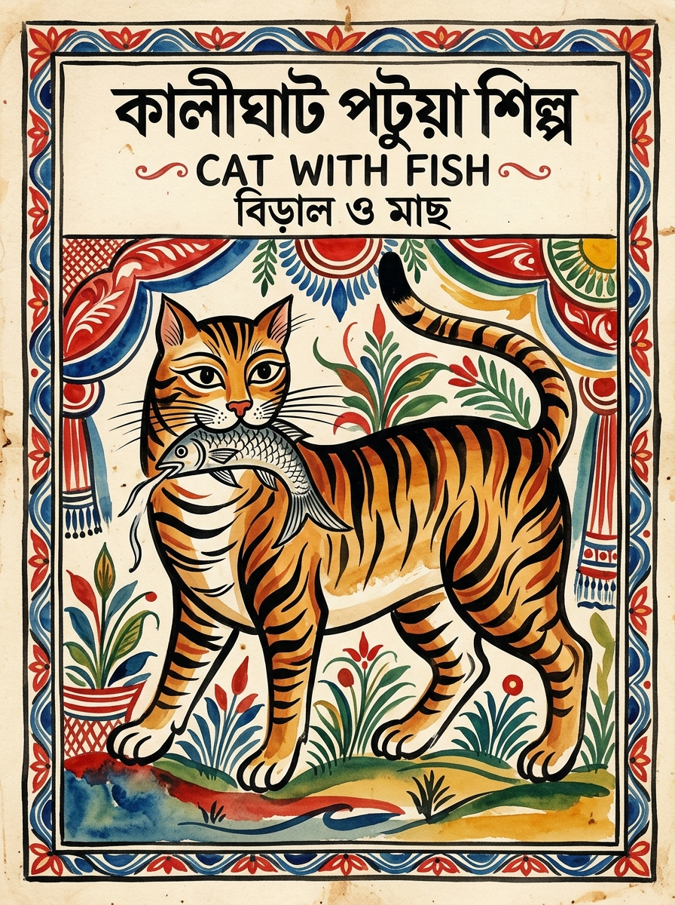

West BengalKalighat Painting
Kolkata, West Bengal
Born near the Kalighat temple in 19th-century Kolkata, this art form features bold, sweeping brushstrokes and simplified, powerful forms. Originally depicting Hindu deities, it evolved into sharp social commentary — making it India's earliest form of visual satire.